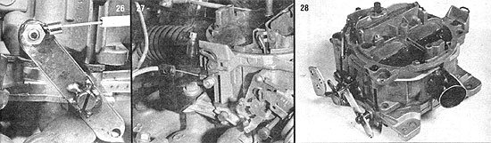

[26] Cut apiece of 1/8"" X 3/4"" flat stock to 3"" or so in length, drill a 3/16"" hole in each end and another that's offset a bit from the center, and tack-weld this lever to the end of the secondary throttle shaft to replace the small arm you removed previously. If you want to use a motorcycle twist grip control as we did, crimp a ring tongue terminal to the end of the cable and mount it to the lever. If not, standard linkage hardware can be used. [27] Drill a 5/32"" hole through the lower arm of the secondary choke shaft lever and fasten a cable-and-ring control (as shown) or a ball-and-socket terminal. A bracket ? made from a piece of 1/8"" X 5/8"" X 4"" flat stock bent to a 90? angle ? can hold the cable in place. [28] The modified carburetor, assembled and ready for installation. A 1-1/2"" radiator hose completes the joint between the smoke supply tube (from the wood-gas generator's cooler/filter) and the sink drain inlet pipe fitted to the rear wall of the altered Quadrajet.